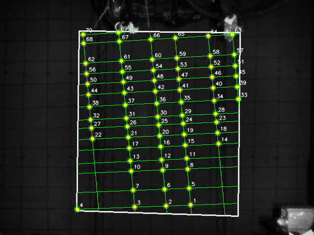
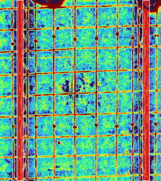
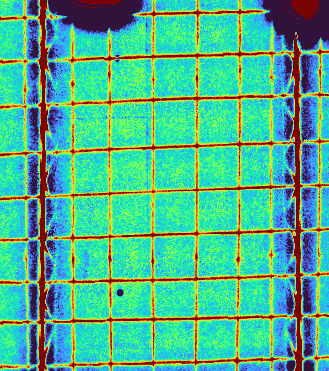
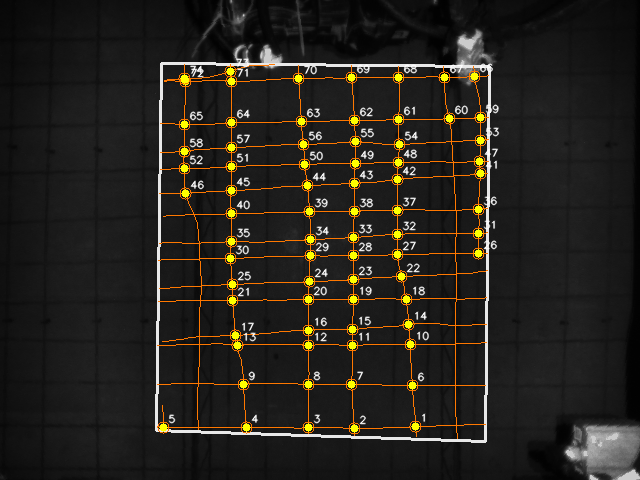

scheme 1只保留 theta/rho 直线族
70 points当前抓帧 full 点数
139.3 ms当前报告单次 full 耗时
69 testsPR-FPRG 单测通过




当前只做方案1，不启用方案2，也不启用曲线方案。主链使用深度响应 depth_background_minus_filled 估计 theta/rho 直线族；钢筋线允许穿过梁筋，梁筋只在最终绑扎点级排除。



